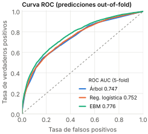
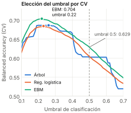
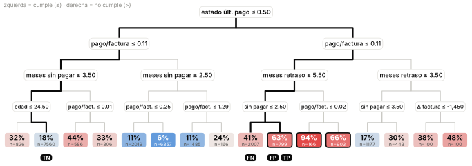
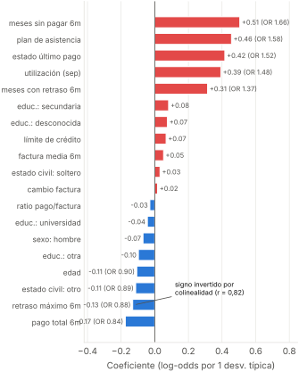
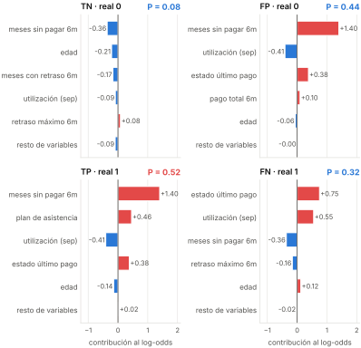
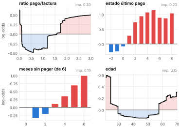
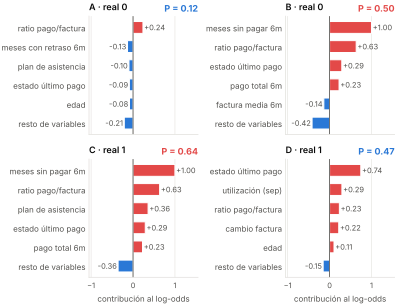
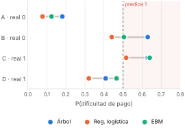

| Clasificador | Ajustes clave | Acc. | Bal. acc. | Recall | F1 | ROC AUC |
|---|---|---|---|---|---|---|
| DecisionTree | entropy, depth 4, min_leaf 100 | 0,813 | 0,603 | 0,237 | 0,350 | 0,747 ±0,005 |
| LogisticRegression | L2, C = 0,1 | 0,811 | 0,604 | 0,245 | 0,354 | 0,752 ±0,006 |
| EBM | interactions = 0 | 0,819 | 0,629 | 0,299 | 0,412 | 0,776 ±0,005 |
Umbral 0,5 · hiperparámetros por GridSearchCV (ROC AUC) · one-hot en categóricas, escalado solo en la RL


Umbrales de 0,20 a 0,50 sobre predicciones out-of-fold. test.csv: EBM con umbral 0,5 (mayor accuracy, la métrica de evaluación); en un banco real, 0,25.

Solo 3 de 16 hojas predicen la clase 1 con umbral 0,5. Juntas equivalen a una regla:
estado último pago ≥ 1 Y pago/factura ≤ 0,11meses sin pagar ≥ 3 O 6 meses con retraso) → dificultadCubre 1.868 clientes con 67 % de precisión. Las 8 hojas de la rama izquierda predicen 0: con las mismas predicciones cabe una lista de reglas mucho más corta (GOSDT / imodels).
Importancia (reducción de entropía):
Sexo, educación y estado civil: 0. También deja fuera la utilización y el plan de asistencia.
TNestado de pago 0 (sin retraso), paga todos los meses, 54 años: hoja más poblada (7.560), P = 0,181 → 0 ✓
FN2 meses de retraso pero paga todos los meses: hoja P = 0,409 → 0 ✗. Ignora utilización 99 %; con t = 0,25 acertaría.
FPTPmismo recorrido y misma hoja (P = 0,630): 1 mes de retraso, ratio 0 y 6 meses sin abonos.
Pero su factura media es ≈ 0: cuentas inactivas, “no debe nada”, no “no paga”. El árbol no puede separarlos; el 37 % de esa hoja no tiene dificultades.


Ambos suman +1,40 por 6 meses sin pagar. El plan de asistencia (+0,46) decide:
FP: z = −0,24 → 0,441 → 0 ✓
TP: z = +0,06 → 0,516 → 1 ✓
FN: los pagos regulares compensan el retraso → 0,320; solo se detecta con t = 0,25.
Ojo: el plan se asigna a quien ya tiene estrés financiero → asociación, no causa.

Banda = incertidumbre entre bolsas de entrenamiento.

TP (0,640) supera a FP (0,505) en 13,5 puntos por el plan de asistencia (+0,36 frente a −0,10), aunque FP sigue siendo alarma. FN sube a 0,466, la más alta de los tres modelos, por estado de pago 2 (+0,74) y utilización 99 % (+0,29).

Coinciden en TN; discrepan en FP (solo la RL acierta). Ninguno detecta FN con 0,5; los tres con 0,25.